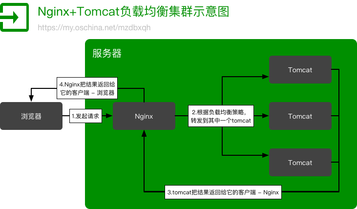

通过简单的配置，Nginx 可以实现反向代理，负载均衡，动静分离，URL 重写等。
代理
- 正向代理：客户使用代理访问多个外部 Web 服务器，就是翻墙
- 反向代理：多个客户使用它访问内部 Web 服务器
负载均衡
七层负载均衡: Nginx
四层负载均衡: F5
四层和七层负载均衡的区别

Nginx 的配置 nginx.conf
/etc/hosts 里把 www.xtuer.com 映射到 127.0.0.1，这样可以在本地浏览器访问 http://www.xtuer.com
Mac 下 MAMP 的 nginx 的配置文件路径为 /Applications/MAMP/conf/nginx/nginx.conf
1 | user root admin; |
访问 http://www.xtuer.com/** Nginx 会匹配 URL，如果是静态图片，js, css 等资源，则从 Nginx 所在电脑访问，其他的则根据 weight 值分发给 upstream 里面的 AppServer 处理，某个 AppServer 不能连接也不会影响系统的访问。
同一台电脑启动多个 AppServer 组成集群
以 Maven module Xbox 为例：
修改 pom.xml 里的 port 为不同的端口号
1
2
3
4
5
6
7
8
9
10
11<plugin>
<!--嵌入式的 Tomcat Web Server-->
<groupId>org.apache.tomcat.maven</groupId>
<artifactId>tomcat7-maven-plugin</artifactId>
<version>${tomcat.version}</version>
<configuration>
<port>8081</port>
<path>/</path> <!--Content Path用 /，而不是项目名-->
<uriEncoding>UTF-8</uriEncoding> <!--处理 GET 请求的编码-->
</configuration>
</plugin>执行
mvn tomcat7:run启动 Xbox重复 1, 2 多次，启动多个 Xbox，但是监听不同的端口号
配置 nginx 的 upstream，让多个 Xbox 组成集群
1
2
3
4
5upstream app_server {
server 127.0.0.1:8080 weight=4;
server 127.0.0.1:8081 weight=2;
server 127.0.0.1:8082 weight=1;
}浏览器里多次访问如 http://www.xtuer.com/error，就可以看到不同的 AppServer 处理请求的次数因为 weight 的不同而不同。
Gradle 的 gretty 插件目前还不支持多实例运行。
Mac 下用 MAMP 安装的 Nginx 的命令
重新加载配置前测试配置语法的合法性很重要:
- 测试配置文件语法：
sudo /Applications/MAMP/Library/bin/nginxctl -t - 重新加载配置文件：
sudo /Applications/MAMP/Library/bin/nginxctl -s reload
Web Socket 的负载均衡
Nginx 还能够对 Web Socket 进行负载均衡，例如配置如下:
1 | http { |